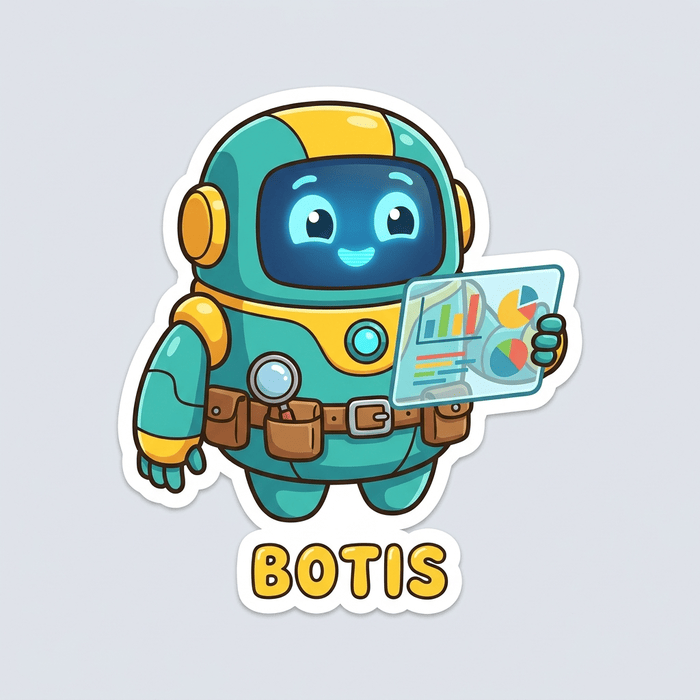
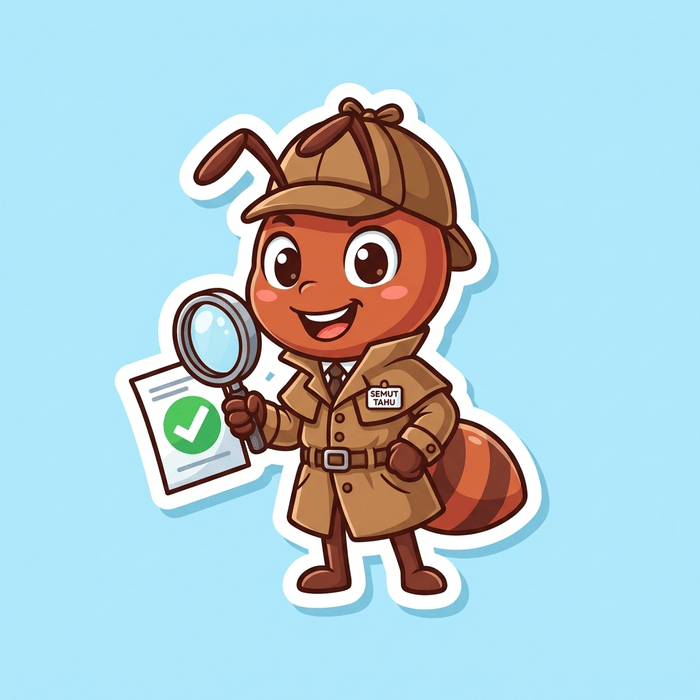

Cakar Nalar adalah program pembelajaran berpikir kritis berbasis sains kognitif untuk remaja hingga masyarakat umum, membedah fakta dari asumsi, mendeteksi disinformasi, dan membangun kewarganegaraan digital yang santun.


Perkembangan teknologi informasi dan media sosial di Indonesia membawa dampak ganda: di satu sisi mempermudah komunikasi, namun di sisi lain memicu banjir disinformasi, deepfake, serta manipulasi narasi digital. Program Pengabdian Masyarakat Cakar Nalar hadir sebagai benteng kognitif untuk membangun masyarakat yang tidak hanya cerdas teknologi, tetapi juga tajam dalam bernalar dan berkarakter etis.
Program ini menyasar remaja usia 13 tahun ke atas hingga masyarakat umum, dengan pendekatan yang membumi: setiap konsep berpikir kritis dijelaskan lewat studi kasus nyata Indonesia, mulai dari pesan berantai di grup keluarga, video hasil rekayasa AI, hingga debat kebijakan publik, supaya materi tidak berhenti di teori, tapi benar-benar terpakai saat peserta kembali membuka media sosialnya sehari-hari.
Terwujudnya masyarakat Indonesia yang kritis, berkarakter, kebal terhadap hoaks, serta bijak dalam mengonsumsi dan menyebarkan informasi digital.
Menyediakan modul literasi digital berbasis sains kognitif, melatih keterampilan berpikir tingkat tinggi (HOTS), dan mendorong kewarganegaraan digital yang santun dan edukatif.
Setiap materi Cakar Nalar dirancang dengan mengintegrasikan tiga kerangka ilmiah yang teruji.
Recognize Assumptions, Evaluate Information, Draw Conclusions (Chartrand et al., 2012; Al-Khanaifsawy, 2023).
Dimensi Proses Kognitif (Remembering hingga Creating) & Dimensi Pengetahuan (Anderson & Krathwohl, 2001).
8 Konsep Kunci Literasi Media, Deteksi Disinformasi, Algoritma & Digital Citizenship (Wilson, 2019).
Tiga karakter yang akan menemani setiap babnya, masing-masing membawa gaya berpikir kritis yang berbeda.
Membedakan fakta dari asumsi dan mengajarkan prinsip Stop & Think sebelum percaya pada sebuah klaim.
Membedah keaslian konten digital lewat rumus verifikasi 5W+1H dan deteksi disinformasi.
Melatih evaluasi argumen tingkat tinggi dan menghindari lompatan kesimpulan yang keliru.
Mulai dari mengukur kemampuan awal, belajar berurutan per bab, sampai tuntas semua materi dan final tryout.
Buat akun peserta gratis dengan nama, email, dan kata sandi.
Mengukur baseline kemampuan kognitif, tingkat kerentanan terhadap disinformasi, dan penguasaan awal penalaran kritis peserta sebelum modul pembelajaran dimulai.
Baca uraian materi yang dipandu tiga maskot, lengkap dengan studi kasus nyata Indonesia.
Uji pemahamanmu lewat kuis pilihan ganda yang langsung dinilai otomatis.
Skor minimal 70 membuka bab selanjutnya, sampai tuntas 6 bab.
Setelah menuntaskan seluruh bab, uji pemahaman secara menyeluruh lewat tryout komprehensif untuk mengukur peningkatan nalar kritismu sejak tes diagnostik.
Gratis, belajar dengan ritme sendiri, dan langsung dapat umpan balik dari tiap kuis.